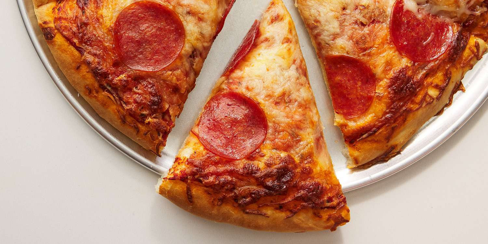

Homemade Pepperoni Pizza

Description
This pepperoni pizza recipe produces a
quick and easy classic! Delicious
homemade pizza crust and tomato sauce
have never been easier.
Ingredients
For the sauce:
- ½ cup water
- ½ can tomato paste
- 1 tsp dried oregano
- 1 tsp dried basil
- ½ tsp garlic powder
- ½ tsp onion powder
- ½ tsp sugar
- ½ tsp salt
- ¼ tsp black pepper
For the crust:
- 3 ¼ cups flour
- 0.25 ounces yeast
- 1 tbsp sugar
- 1 ½ tsp salt
- 1 ⅓ cups warm water
- ⅓ cup oil
Toppings:
- 1 cup shredded mozzarella
- 6 ounce Pepperoni
Steps
- Preheat the oven to 425 degrees F
(220 degrees C). Grease two 12-inch
pizza pans.
- Make sauce: Whisk together water, tomato
paste, oregano, basil, garlic powder,
onion powder, sugar, salt, and pepper
in a medium bowl until smooth. Set aside.
- Make crust: Combine 2 cups flour, yeast,
sugar, and salt in a large bowl. Add warm
water and oil; mix until well blended,
about 1 minute. Gradually add remaining
flour, a little at a time, until a soft,
sticky dough forms.
- Transfer dough to a floured surface;
knead until dough is smooth and elastic,
about 4 minutes. Add more flour as needed.
(If using RapidRise yeast, let dough rest,
covered, for 10 minutes.)
- Divide dough in half. Lightly flour your
hands, then pat each piece of dough onto
the prepared pizza pans.
- Top dough with sauce, cheese, and pepperoni.
- Bake in the preheated oven until crusts
are browned and cheese is bubbly, 18 to
20 minutes. Rotate pizza pans between the
top and bottom oven racks halfway through
baking.